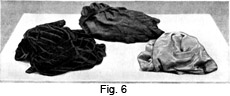
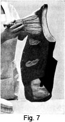

1931 - Laundering and Dry Cleaning
Woman's Institute of Domestic Arts & Sciences,
by Mary Brooks Picken
Dry-Cleaning Processes
PRECAUTIONS
55. Before any woman attempts to use gasoline or a similar cleaning agent, she must familiarize herself with several precautions in order both to make the cleaning process safe and to secure good results. These precautions, which are not difficult to understand nor observe, should be kept in mind all during the cleaning of a garment.
56. Overcoming Danger.—The danger in using inflammable materials may be entirely eliminated by careful handling. Thousands of gallons of such materials are used daily with safety by those persons who understand the combustible nature of cleaning fluids and who exercise the necessary precautions.
Avoid heat when using inflammable cleaning materials by working out of doors in the shade, or by an open window in an unheated room.
Avoid placing near a fire or light, or pressing with a hot iron, garments cleaned with inflammable materials. The garment should be allowed to dry first.
Avoid having on hand a supply of inflammable cleaning fluid unless there is a basement or outside storehouse where it may keep cool.
Do not inhale the fumes of ether, chloroform, and carbon tetrachloride, as they have a sleep-producing effect.
57. Overcoming Strong Odors.—Some cleaning agents have unpleasant or unhealthful odors, but if the following suggestions are noted these agents may be used in such a way that this objection is negligible.
Choose a bright, clear day so that quick evaporation will be possible.
Work out of doors and let the fresh air carry away the odor.
Work rapidly, having all materials assembled, as shown in Fig. 4.
Neutralize unpleasant odors by adding a few drops of oil of sassafras, mixing the oil with the last bath.
For removing the after-odor from garments, it is necessary only to allow sufficient time for the agent to evaporate. After a garment has dried, evaporation may be quickened by means of heat supplied by pressing with a moderately hot iron, by hanging the garment in the sun (if this will not affect the color), or by placing it somewhat near a radiator or heater.
58. Securing Better Results.—The poor results sometimes obtained after expending considerable time on dry cleaning have caused some amateur cleaners to become discouraged. The reason for these poor results is either that too little cleanser has been used or that the garment has not been rinsed well.
To secure good results, therefore, provide several gallons of cleanser for cleaning. Dry cleaning requires only a third less cleaning fluid than the amount of water that a laundress would use if she were washing the garments. This is not an extravagant plan because a number of garments may be cleaned at one time, and the used cleanser may be strained, after the dirt has been allowed to settle, and preserved for the next cleaning day.
Also, remove the cleanser thoroughly from the articles so that it is not allowed to run and cause streaks in the fabric. To avoid streaking, use heavy towels to press out some of the moisture.
59. Protecting the Hands.—The fact that cleaners are hard on the hands has in some instances caused home cleaning to be avoided, but this may very easily be prevented.
Apply glycerin or some good hand lotion as soon as the hands are taken out of the cleanser. Soap should never be used until the skin has been thus softened.
Use long rubber gloves for protection when cleaning with gasoline or another cleaning oil.
DRY-CLEANING PROGRAM
60. Just as the work of wet washing is facilitated and good results are made more likely by a definite and systematic program, so the work of dry cleaning is made easier and more successful if a good program is adopted. For this purpose, the following processes are mentioned here in chronological order. Detailed explanations of them are given in other parts of the chapter.
- Sort clothes as to color.
- Examine nature of spots.
- Mark with thread any that will be hard to see.
- Provide cleaning agents that will be needed.
- Set up the equipment out of doors in the shade or indoors in a well-ventilated room where there is no heat nor artificial light.
- Brush garments, turning pockets and folds inside out.
- Remove spots.
- Wash light-colored batch of clothes in vessel 1 and put in vessel 2.
- Wash medium-colored batch in vessel 1, shift first batch to vessel 3 and second batch to vessel 2.
- Wash dark-colored batch in vessel 1, hang up batch 1, shift second batch to vessel 3 and third batch to vessel 2.
- Remove any spots that show up after the first bath.
- Finish rinsing and drying second and third batches, using bath towels to absorb part of the moisture and then hanging garments in the air.
- After the absorbent has evaporated, either press garments, using a cloth so as not to cause shine to appear, or steam garments if the fabric requires steaming.
- Air garments thoroughly.
METHOD OF PROCEDURE
61. Sorting.—After choosing a favorable day for dry cleaning, proceed to sort the soiled articles. These should be spread out on a table in groups; first, the light ones, then those of medium color, and last the dark ones, as shown in Fig. 6.
During the sorting, cleaning may be simplified by marking with a white thread all spots on dark fabrics. This plan makes it possible for the person doing the cleaning to find all spots easily so that none will escape cleaning and show up after the garment has dried.
Since gasoline and similar oils destroy the luster of buttons and buckles, if these have not been previously removed, they should be taken off garments at this time.
62. Brushing.—The next step is to remove as much dust as possible. Shake everything thoroughly or, with a smooth switch, gently beat the fabric, preferably on a padded surface. Also, turn all pockets inside out and brush, as shown in Fig. 7.
63. Spotting.—Now you are ready for spotting, which is of greatest importance. Choose from Table I the correct stain remover for the spot to be removed and follow the method of procedure given in this table, as well as the more detailed directions in Arts. 32 to 44 that apply to the particular reagent required. Follow several methods, if necessary, until all traces of stains have disappeared.
64. Order of Washing.—Use 3 or 4 vessels with lids, as explained; 3 are sufficient if the garments are not very soiled. Fill each one one-half to three-quarters full of the particular cleaning fluid you have chosen, and put the first vessel into a larger one of very hot water to heat. If dry-cleaning soap is used, put it in the first vessel.
Wash in vessel No. 1 the articles in the first pile, those lightest in color. Place them in vessel No. 2. allowing them to drip while in your hands, and cover vessel No. 2. Then thoroughly wash in vessel No. 1 the next lot, those of medium color. In the meanwhile, put the articles from vessel No. 2 into No. 3, Now lift the articles from No. 1, allow them to drip a little while in your hands, and place them in vessel No. 2. Then commence washing the third lot in vessel No. 1.
This changing of articles from one vessel to another is done for the purpose of always bringing the first lot, the light pieces, into contact with the fresh cleanser.
65. Cautions in Washing.—During washing, do not rub the garments, but rather work them up and down in the liquid and squeeze it through the fabric gently. This procedure will keep the material free from wrinkles and be an aid in pressing. Also, it is easier on the fibers.
Do not let any part of the article dry until the whole has been cleaned, for in this lies the secret of successful dry cleaning at home. To prevent material from drying and at the same time to work on the spots as the garments are taken from one bath to the other, use a large, flat pan, or the sink arrangement described in Art. 48. Place flat on the bottom of the pan, or sink, the part of the garment in which the spot shows, and work on it there.
The object in placing the garment in either of these receptacles while working on it to remove spots, is to keep the garment wet instead of having to squeeze out the fluid when the garment is removed from one bath preparatory to being placed in another. If put into the pan or shallow sink while still dripping wet, parts of the garment will not become dry and will cause marks to form.
Before cleaning elaborately draped garments or those intricately trimmed, it is better for the amateur to rip the dress, blouse, or skirt partially in order to facilitate the work. After pressing, slip the dress on, pin the details back in position, and replace the stitches.
66. Rinsing.—Rinse thoroughly in the last vessel the articles first treated and then spread them upon the table and examine. If dirty pieces are still found, rub the articles with a clean tampon dipped in cleanser or alcohol. If desired, as the garments come out of the last rinse, place them in a vessel in which the adhering cleaner will drain off while you are washing other articles.
67. Drying.—Never wring garments to free them from dry-cleaning liquids, or you will cause streaking and wrinkling. Press out some of the moisture gently with the hands, and, when garments are not too bulky, place them between two heavy bath towels to absorb the surplus. Dresses, blouses, jackets, and the like should be placed on hangers where they can be allowed to drip. For the drying and evaporating process, 36 hours is the time recommended by professionals.
Frequently a garment is not cleaned until time to wear it. As a general rule, this should be avoided because there is great danger in wearing a garment too soon after cleaning. But if it is necessary to wear it 10 or 12 hours after cleaning, hang the garment in a warm place after it is dry and the heat will remove the odor and help to absorb the cleaner more quickly.